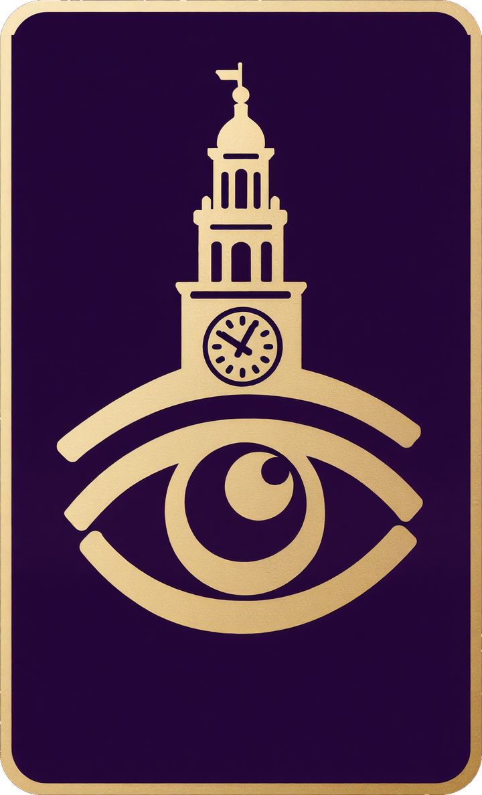

点击任意位置进入
📖

点击任意处收起
间谍魔典
⛶
⟳
⚙
说书人
已登录
退出
玩家
已登录
退出
暗流涌动
入席
当前客人名册
过往客人名册
−
共
8
人
＋
随机排座
清空座位
角色设置
夜晚
白天
◀
第
1
夜
▶
随机发牌
重置角色
对局列表
统计
积分榜
客人名单
标记
提名
概览
座位
名字
角色
出局
中毒
醉酒
守护/免疫
已开枪
主人
红鲱鱼
备注（提醒标记）
清空此座
完成
确认
取消
确定
请把手机横过来
血染钟楼在横屏下体验更好 🔄
本局存档 · 角色配置
✕
聊天室
✕
发送
⚙ 设置
✕
当前版本
—
平台
移动端
PC端
选择你的设备类型。目前两者显示一致，后续会根据移动端表现单独优化部分画面。
音量
音效
100%
动画
100%
背景音乐
100%
分别控制事件音效、处决/射杀等动画视频、背景音乐的音量。左上角静音按钮会临时静音全部声音。
账号
重置我的密码
确认重置
玩家与说书人账号共用同一密码，重置后两者会同步更新。
说书人口令
保存说书人口令
登录说书人时，除账号密码外还需输入这个统一口令——只有知道口令的人才能进入魔典。修改后其他说书人下次登录需用新口令；已勾选「记住我」的设备不受影响。
更新内容
✕
说 书 人
只有你能进入魔典与公布信息。
在本机记住我（下次免敲密码/口令）
进入魔典
取消
玩 家 笔 记
用你的 ID 和密码进入私人笔记本。
第一次登录会自动创建。
在本机记住我（下次免敲密码）
进入笔记
取消